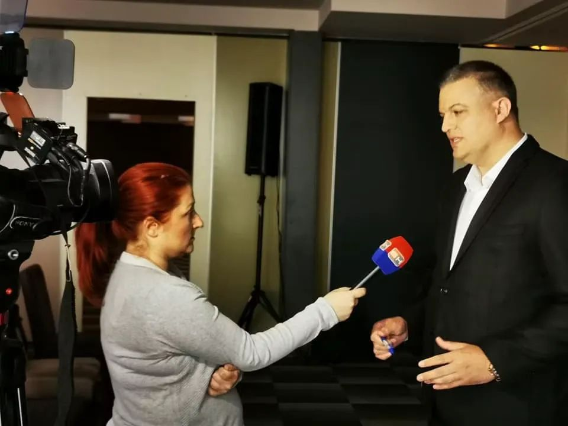

Već 15 godina bavi se poslovima vezanim za mentalno zdravlje i radom s korisnicima i klijentima, najprije kao psiholog u Dnevnom centru za djecu ulice (u riziku), projektu Save the children, pri UG za promociju i obrazovanje Roma "Otaharin" u Bijeljini, zatim u Centru za socijalni rad Trebinje u Dnevnom centru za stara lica, a poslije toga u privatnom sektoru, u ljudskim potencijalima i resursima, u firmi Đurić MBB Doboj.
Posljednjih pet godina posvećen je isključivo klijentima, kroz psihoterapijski rad.
Pored sistemske porodične terapije, edukovao se iz još jednog psihoterapijskog pravca - Transakcione analize, čije osnove takođe primjenjuje u radu.
Individualna psihoterapija, bračni i partnerski odnosi, rad s porodicama, adolescentima, starijim licima, zatim: depresivnost, traume, anksioznost, panični napadi, socijalizacija, prevencija i bolesti zavisnosti, profesionalno sagorijevanje, profesionalno usmjeravanje, lični rast i razvoj itd - dominantna su područja rada.
Iako često radi sa porodicama, većina klijenata obraća mu se za individualni rad.
Smatra da je samom odlukom da potražite podršku i pomoć profesionalca, pola problema riješeno. Klijent i terapeut zajedničkim snagama mogu onoliko koliko daju u samom procesu.
Rad online, zbog rezultata i pozitivnih povratnih informacija klijenata, smatra jednako uspješnim, stoga mnogo radi i sa klijentima iz cijelog svijeta.
Brojne obuke, edukacije, treninzi, učešća na entitetskim, državnim i regionalnim konferencijama (GIZ, Caritas, Save the children itd), i u timovima za rad sa ranjivim grupama, prethodno i volonterski rad pri više psiholoških savjetovališta, ali i rad u medijima, u informativnim redakcijama RTRS i RTV BN, u svojstvu voditelja TV Dnevnika, bavljenje muzikom i politikom, kritičkim osvrtom na našu sredinu i društvo, dio su njegove biografije.

Pored Filozofskog fakulteta u Banjaluci, Odsjek za psihologiju i završene edukacije za sistemskog porodičnog psihoterapeuta pri Asocijaciji sistemskih terapeuta Srbije u Beogradu, završio je i Fakultet političkih nauka, Odsjek za novinarstvo u Banjaluci.
Pravoslavni je vjernik. Vjeru i porodicu smatra osnovom svakog čovjeka.
Oženjen Željanom (Lošić) Šajinović, TV voditeljkom, novinarkom, voiceover artist i PR-om, otac je dvojice sinova, Vojislava Vuka i Petra.
Sa porodicom trenutno živi i radi u Doboju, s tim da je uvijek otvoren za izazove i promjene, kao stanovnik ove planete.